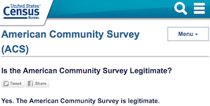
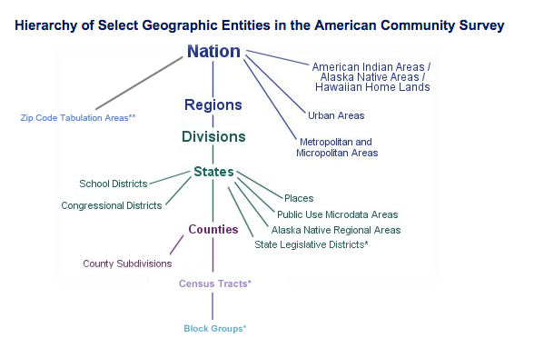
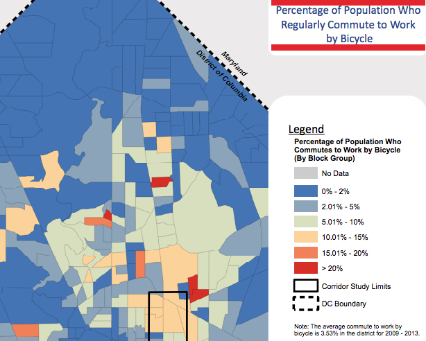

Let's Viz All the Data!*
*actually, please don't
*only the good data, please
*and viz it responsibly, please
Kate Rabinowitz
Data Across the World
Source: Gapminder
Your Primary Sources
Global institutions will be best your source for country-level data outside the US. These are mostly names that you're familiar with:
Always the Read Small Print
The most commonly used figures (or maybe those with the most business value), like unemployment, are more likely to be harmonised, i.e. made comparable across countries despite differing methodologies.
Some of the most comprehensive datasets, for instance the World Bank World Development Indicators dataset, pull data from a variety of sources of varying quality. Know where your data comes from.
Always Read the Small Print
A level higher than data points, indices are common for measuring concepts, like corruption or freedom of press. Know what they measure and read the criticism.
The less developed the country or the more authoritarian the government, the less reliable any data will be.
Data Intregrity and Suspension Typically Only Issues For Developing Nations
A running list of federal agencies directed not to communicate with the public
American Data
Source: Tim Meko, Washington Post. How it was made.
Data.gov! Nearly Two! Hundred! Thousands! Datasets!

Well, actually...

Data.gov is valuable and great to peruse, but the number of datasets may make you more excited than you should be.
More than half of the data is from two agencies (NOAA and Fish and Wildlife Services) and the majority is geospatial.
Much of the data is not a format that cannot quickly be visualized.
If I know the agency owner, I typically just go to the agency's website.
Open Federal Government Data is Pretty Great
It's good to be skeptical, but let's not get too crazy here...
And let's remember informed skepticim is the best skepticism

(Congressman Webster at a 2012 hearing on defunding the ACS)
Generally Held Geographic Groupings
So many levels of granularity! Some have more consistent (MSA) definitions than others (Regions). Do consider how the geographic level can impact the data.
So Local! So Cool!
Watch Your Margins of Error

Local Data
Source: ME!
So Many Cities! So Much Data!
In So Many Places! With So Little Consistency!
DC open data can mostly be found at opendata.dc.gov. The site is by no means comprehensive. One time I tried documenting all the places to find local DC data. There are a lot. Code for DC's data portal can help you put it all together.
American cities' open data portals, ranked:
US City Open Data Census
This can get a little messy
A lot of local data (taxi trips, permits, inspections, etc.) does not have a long history of being used for research and policy and lacks the infrastructure (or did so until very recently) for accurate, complete and clean open data reporting. Documentation is often sparse.
If you have found an anomaly, please first assume it is a result of design and research accordingly.
Data Collection Can Skew Results: A Vision Zero Example
In July 2015 DC's Vision Zero initiative, to reach zero fatalities during transit by 2020, released an app allowing citizens to report pedestrian, bike, or driving safety problems.
The data has also been made publicly available, which is great!
But we must be responsible in how we use that data.
A Vision Zero Example: What's Wrong with These Charts?


Source: District Ninja
A Vision Zero Example: What's Wrong with These Charts?

Source: District Ninja
The Government Isn't the Only Place to Find Data
Newspapers increasingly make their data available. 538 does it the best. Washington Post collects data on police shootings.
Companies have data. For some, like Kaggle, open data is a part of their model. For most, it's not. Getting that data is often a little more complicated, expensive, and/or shady.
But where is, like, the cool data?
For when you're on the hunt for inspiration
- Data is Plural by Jeremy Singer-Vine
- An archive of Jeopardy! The coordinates of Waldo for every Where's Waldo! Annotated Classical Music! All Known Satellite Launches Since 1957!
- Awesome Public Datasets by Xiaming Chen Data Portal to London's Natural History Museum! Cancer! A Million Songs!
- @cooldatasets
- 2,600 Ted Talks*! 11,000+ proposed Constitutional amendments since 1787! 100 cities' open data sites!
To truly love data, you must know it's flaws and help it be it's best self
And that's why you should read and bookmark Quartz's Bad Data Guide
How do we get this data?
CSV is your best friend
Comma separated value files are the easiest to read into R and other programming languages. It's as easy as this:
When It's Not a CSV
- It's a JSON
- ->Make it a csv: https://konklone.io/json/
- It's a PDF
- ->Rage
- ->Try and make it a csv: http://tabula.technology/ or Tabulizer R package
APIs Connect You To Data
For our purposes, a web API is basically a website you can query to get data in a structured format.
You can get all sorts of data through APIs: a twitter feed, Uber price surging, political candidate spending...
APIs allow for access to the latest data, and let you customize what you’re going to get.
What does an API call look like?
https://api.data.gov/ed/collegescorecard/v1/schools?
api_key=xyz&school.name=Johns%20Hopkins%20University
&fields=id,school.name,2013.student.size,2014.student.size
is made up of:
The endpoint:the base url for getting the data
https://api.data.gov/ed/collegescorecard/v1/schools
"?" to start query parameters
Query parameters, separated by & and often including your API key
api_key=xyz&school.name=Johns%20Hopkins%20University&fields=id,school.name,2013.student.size,2014.student.size
Let's try it!
Learn more about APIs
You can learn a lot just from documentation. Here's documentationand an API guide for the College Scorecard data we just queried.
A Short Programmatic Guide to APIs
A whole class: Considering checking out the Hopkins class Unleashing Open Data with Python
Web Scrapping
Web sites are written using HTML. Each web page is a structured document. Sometimes a web page holds data that can only be viewed on that web page. Web scraping lets you gather data from that web page, or more precisely the HTML.
Let's see...
I want to Scrape!
To learn more I like this Greg Rada intro and this walkthrough from Stanford's Text as Data course.
Both of these are Python tutorials. I know this is a R class and I love R. I do almost everything in R. Python is generally better equipped for APIs and web scrapping.
With APIs and web scrapping, always read the terms of use.
FOIA: The Data You Want to Have, And They Don't
I'm being dramatic.
There is a good amount of government data made open. There is a lot of government data not that is open. There are many reasons for this. In many cases, you have the right to this data. You can FOIA for it.
Anyone can FOIA for data.
FOIA: A worthy challenge!
You are freeing data into the world! What a joy!
Know that: your request should be as specific as possible because officals aren't always keen to fill in the blanks, delivery of data may be much longer than 15 days, you may have to pay, and the data will probably be in a terrible format.
You are freeing data into the world! What a joy!
How to FOIA
Where you should FOIA: https://www.muckrock.com/
How you can learn more: https://www.rcfp.org/federal-open-government-guide/federal-freedom-information-act/how-foia-works
What you should FOIA: Everything.
I Want Data, I Never Want to Leave R
There are a number of R packages that give you direct access to data so you never have to leave! Here is a ComputerWorld list and R Bloggers list. Both are most certainly incomplete.
Now, Go Grab Some Awesome Data and Viz Beautifully and Responsibly!
- Kate Rabinowitz
- datalensdc@gmail.com